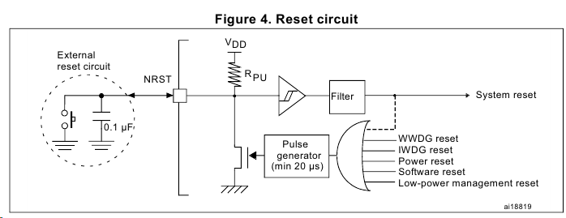
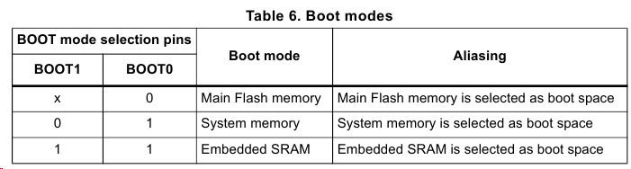
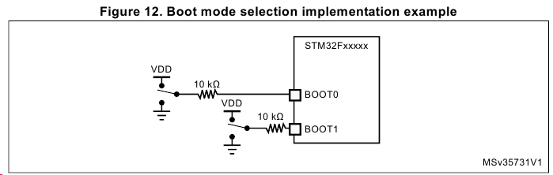
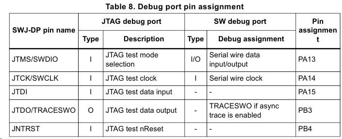

Power supplies
The operating voltage supply (VDD) range is 1.8 V to 3.6 V, which can be reduced down to 1.7 V with some restrictions, as detailed in the product datasheets. An embedded regulator is used to supply the internal 1.2 V digital power.
The real-time clock (RTC), backup registers and backup registers can be powered from the VBAT voltage when the main VDD supply is powered off.
Voltage regulator
The voltage regulator is always enabled after reset. It works in three different modes depending on the application modes.
• in Run mode, the regulator supplies full power to the 1.2 V domain (core, memories and digital peripherals)
• in Stop mode, the regulator supplies low power to the 1.2 V domain, preserving the contents of the registers and SRAM
• in Standby mode, the regulator is powered down. The contents of the registers and SRAM are lost except for those concerned with the Standby circuitry and the Backup domain.
Note: Depending on the selected package, there are specific pins that should be connected either to VSS or VDD to activate or deactivate the voltage regulator. Refer to section “Voltage regulator “ in datasheet for details
Regulator OFF mode
Refer to section “Voltage regulator” in datasheet for details.
• When BYPASS_REG = VDD, the core power supply should be provided through VCAP1 and VCAP2 pins connected together.
– The two VCAP ceramic capacitors should be replaced by two 100 nF decoupling capacitors.
– Since the internal voltage scaling is not managed internally, the external voltage value must be aligned with the targeted maximum frequency.
– When the internal regulator is OFF, there is no more internal monitoring on V12. An external power supply supervisor should be used to monitor the V12 of the logic power domain (VCAP). PA0 pin should be used for this purpose, and act as power-on reset on V12 power domain.
• In regulator OFF mode, the following features are no more supported:
– PA0 cannot be used as a GPIO pin since it allows to reset a part of the V12 logic power domain which is not reset by the NRST pin.
– As long as PA0 is kept low, the debug mode cannot be used under power-on reset. As a consequence, PA0 and NRST pins must be managed separately if the debug connection under reset or pre-reset is required.
– The over-drive and under-drive modes are not available.
– The Standby mode is not available.
The following conditions must be respected:
• VDD should always be higher than VCAP to avoid current injection between power domains.
• If the time for VCAP to reach V12 minimum value is smaller than the time for VDD to reach 1.7 V, then PA0 should be kept low to cover both conditions: until VCAP reaches V12 minimum value and until VDD reaches 1.7 V.
• Otherwise, if the time for VCAP to reach V12 minimum value is smaller than the time for VDD to reach 1.7 V, then PA0 could be asserted low externally.
• If VCAP goes below V12 minimum value and VDD is higher than 1.7 V, then PA0 must be asserted low externally.
The VDD voltage range is 1.8 V to 3.6 V (down to 1.7 V with some restrictions, see relative Datasheet for details).
• The VDD pins must be connected to VDD with external decoupling capacitors: one single Tantalum or Ceramic capacitor (min. 4.7 µF typ.10 µF) for the package + one 100 nF Ceramic capacitor for each VDD pin.
• The VBAT pin can be connected to the external battery (1.65 V < VBAT < 3.6 V). If no external battery is used, it is recommended to connect this pin to VDD with a 100 nF external ceramic decoupling capacitor.
• The VDDA pin must be connected to two external decoupling capacitors (100 nF Ceramic + 1 µF Tantalum or Ceramic).
• The VREF+ pin can be connected to the VDDA external power supply. If a separate, external reference voltage is applied on VREF+, a 100 nF and a 1 µF capacitors must be connected on this pin. In all cases, VREF+ must be kept between (VDDA-1.2 V) and VDDA with minimum of 1.7 V.
• Additional precautions can be taken to filter analog noise:
– DVDA can be connected to VDD through a ferrite bead.
–Th eRVEF+ pin can be connected to VDDA through a resistor.
• For the voltage regulator configuration, there is specific BYPASS_REG pin (not available on all packages) that should be connected either to VSS or VDD to activate or deactivate the voltage regulator specific.
– Refer to Section 2.1.2 and section "Voltage regulator" of the related device datasheet for details.
• When the voltage regulator is enabled, VCAP1 and VCAP2 pins must be connected to 2*2.2 µF LowESR < 2Ω Ceramic capacitor (or 1*4.7 µF LowESR < 1Ω Ceramic capacitor if only VCAP1 pin is provided on some packages).


The values on the BOOT pins are latched on the 4th rising edge of SYSCLK after a reset. It is up to the user to set the BOOT1 and BOOT0 pins after reset to select the required boot mode.
Boot from User Flash mode
The application code that runs after reset is located in user flash memory. The user flash memory in this mode is aliased to start at address 0x00000000 in boot memory space. Upon reset, the top-of-stack value is fetched from address 0x00000000, and code then begins execution at address 0x00000004.
Boot from System Memory mode
The system memory (not the user flash) is now aliased to start at address 0x00000000. The application code in this case must have already been loaded into system memory.
Boot from Embedded SRAM mode
The SRAM start at address 0x00000000. When this mode is selected, the device expects the vector table to have been relocated using the NVIC exception table and offset register, and execution begins at the start of embedded SRAM. The application code in this case must have already been loaded into embedded SRAM. This last mode is usually used for Debugging


To avoid any uncontrolled I/O levels, the STM32F4xxxx embeds internal pull-up and pull-down resistors on JTAG input pins:
• JNTRST: Internal pull-up
• JTDI: Internal pull-up
• JTMS/SWDIO: Internal pull-up
• TCK/SWCLK: Internal pull-down
Once a JTAG I/O is released by the user software, the GPIO controller takes control again. The reset states of the GPIO control registers put the I/Os in the equivalent state:
• JNTRST: Input pull-up
• JTDI: Input pull-up
• JTMS/SWDIO: Input pull-up
• JTCK/SWCLK: Input pull-down
• JTDO: Input floating
The software can then use these I/Os as standard GPIOs.